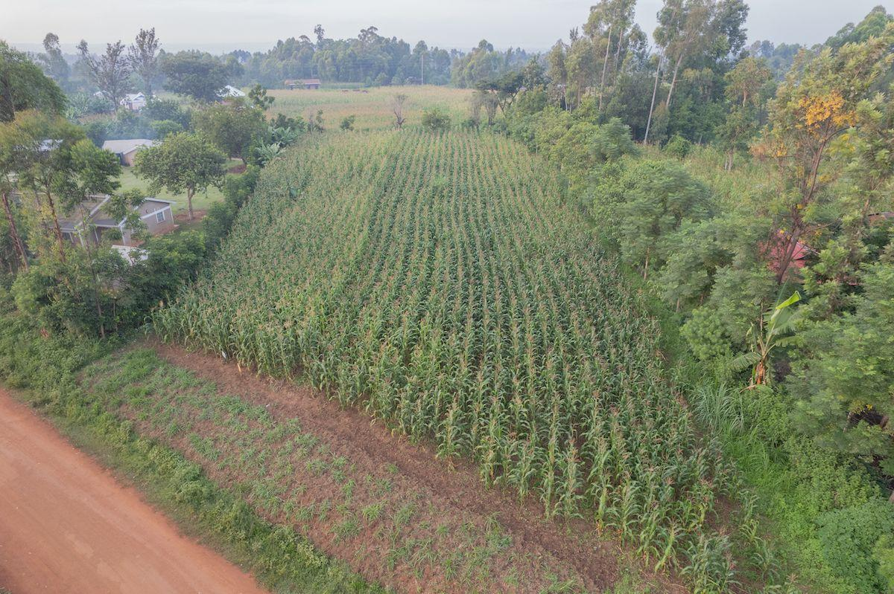

How to Calculate Maize Yield Per Acre
Learn how to calculate maize production per acre using harvested grain and the area cultivated.
Read Guide →Clear guides, practical farming information, farm cost resources, agricultural technology, and useful calculators for farmers in Kenya.
Explore Maize Farming
Learn about maize planting, yield, fertilizer, production costs, and farm management.
Explore practical information about crops grown by farmers across Kenya.
Understand farm expenses, budgeting, production costs, revenue, and profit.
Discover data, digital tools, AI, weather information, and technology used in modern agriculture.
Calculate crop yields, farm costs, expected revenue, and estimated profit.
Learn how to calculate maize production per acre using harvested grain and the area cultivated.
Read Guide →Understand common maize production costs, including seed, fertilizer, labour, land preparation, and other expenses.
Read Guide →Learn why fertilizer rates, timing, soil conditions, and crop requirements matter in crop production.
Read Guide →Explore important considerations when preparing land, selecting seed, planting, and establishing a maize crop.
Read Guide →Understand how rainfall, soil fertility, seed selection, pests, weeds, and farm management can influence maize yield.
Read Guide →Learn how revenue, production costs, selling prices, and yield can be used to estimate farm profit.
Read Guide →Estimate maize yield per acre using harvested grain and the area harvested. A simple tool for understanding farm production.
Record input costs, labour, planting dates, harvest quantities, and selling prices to understand your farm performance.
Soil characteristics and nutrient availability can affect crop growth. Soil testing can help inform fertilizer decisions.
Regularly inspect crops for weeds, pests, diseases, moisture stress, and other problems.
Kenya Farm Guide brings together practical agricultural information in one place. The site focuses on farming topics that matter to farmers, students, agricultural professionals, and people interested in agriculture in Kenya.
Our guides cover crop production, farm costs, agricultural technology, farm planning, and practical calculations. The aim is to present information in a clear and accessible way.